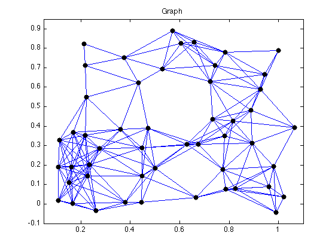
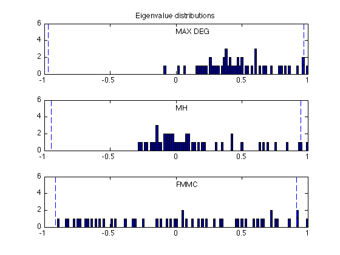
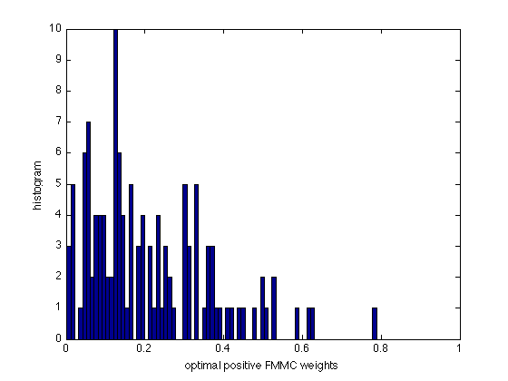
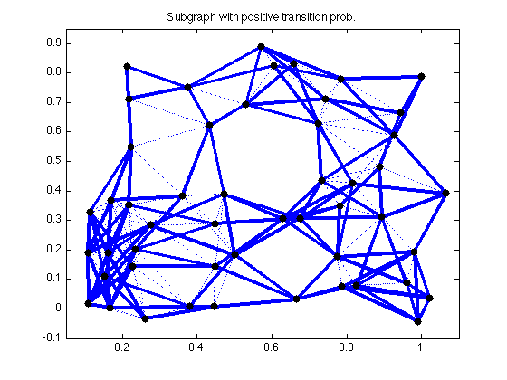
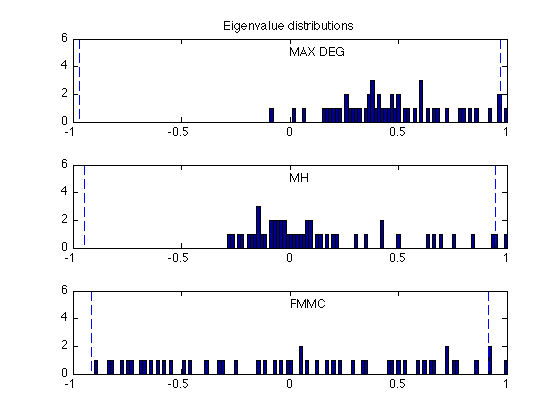
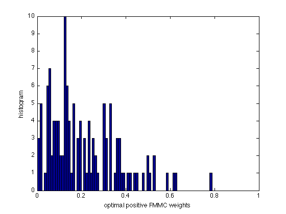
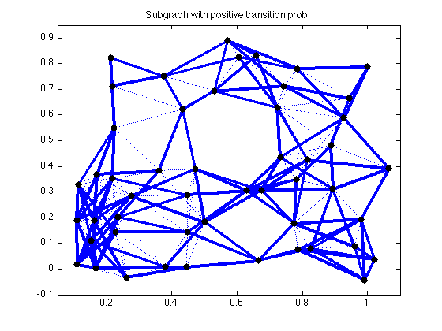
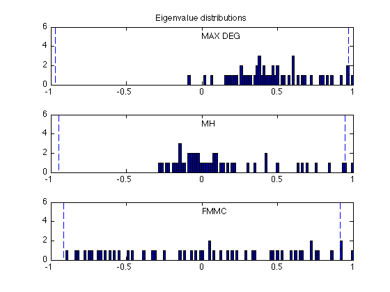
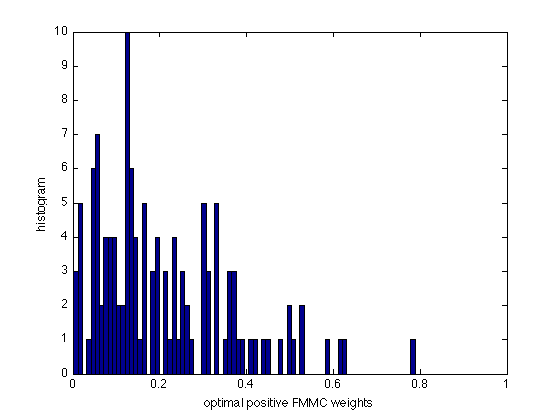
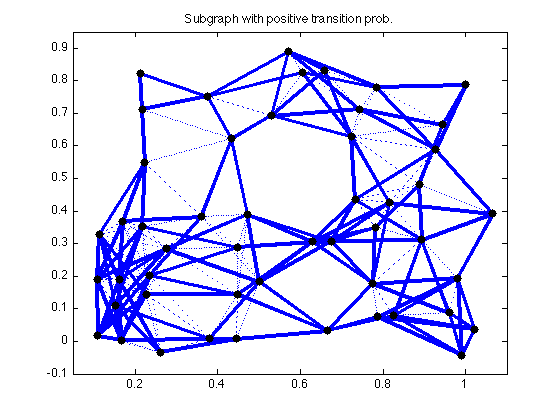

% S. Boyd, et. al., "Convex Optimization of Graph Laplacian Eigenvalues" % ICM'06 talk examples (www.stanford.edu/~boyd/cvx_opt_graph_lapl_eigs.html) % Written for CVX by Almir Mutapcic 08/29/06 % (figures are generated) % % In this example we consider a graph described by the incidence matrix A. % Each edge has a weight W_i, and we optimize various functions of the % edge weights as described in the referenced paper; in particular, % % - the fastest distributed linear averaging (FDLA) problem (fdla.m) % - the fastest mixing Markov chain (FMMC) problem (fmmc.m) % % Then we compare these solutions to the heuristics listed below: % % - maximum-degree heuristic (max_deg.m) % - constant weights that yield fastest averaging (best_const.m) % - Metropolis-Hastings heuristic (mh.m) % randomly generate a graph with 50 nodes and 200 edges % and make it pretty for plotting n = 50; threshold = 0.2529; rand('state',209); xy = rand(n,2); angle = 10*pi/180; Rotate = [ cos(angle) sin(angle); -sin(angle) cos(angle) ]; xy = (Rotate*xy')'; Dist = zeros(n,n); for i=1:(n-1); for j=i+1:n; Dist(i,j) = norm( xy(i,:) - xy(j,:) ); end; end; Dist = Dist + Dist'; Ad = Dist < threshold; Ad = Ad - eye(n); m = sum(sum(Ad))/2; % find the incidence matrix A = zeros(n,m); l = 0; for i=1:(n-1); for j=i+1:n; if Ad(i,j)>0.5 l = l + 1; A(i,l) = 1; A(j,l) = -1; end; end; end; A = sparse(A); % Compute edge weights: some optimal, some based on heuristics [n,m] = size(A); [ w_fdla, rho_fdla ] = fdla(A); [ w_fmmc, rho_fmmc ] = fmmc(A); [ w_md, rho_md ] = max_deg(A); [ w_bc, rho_bc ] = best_const(A); [ w_mh, rho_mh ] = mh(A); tau_fdla = 1/log(1/rho_fdla); tau_fmmc = 1/log(1/rho_fmmc); tau_md = 1/log(1/rho_md); tau_bc = 1/log(1/rho_bc); tau_mh = 1/log(1/rho_mh); eig_opt = sort(eig(eye(n) - A * diag(w_fdla) * A')); eig_fmmc = sort(eig(eye(n) - A * diag(w_fmmc) * A')); eig_mh = sort(eig(eye(n) - A * diag(w_mh) * A')); eig_md = sort(eig(eye(n) - A * diag(w_md) * A')); eig_bc = sort(eig(eye(n) - A * diag(w_bc) * A')); fprintf(1,'\nResults:\n'); fprintf(1,'FDLA weights:\t\t rho = %5.4f \t tau = %5.4f\n',rho_fdla,tau_fdla); fprintf(1,'FMMC weights:\t\t rho = %5.4f \t tau = %5.4f\n',rho_fmmc,tau_fmmc); fprintf(1,'M-H weights:\t\t rho = %5.4f \t tau = %5.4f\n',rho_mh,tau_mh); fprintf(1,'MAX_DEG weights:\t rho = %5.4f \t tau = %5.4f\n',rho_md,tau_md); fprintf(1,'BEST_CONST weights:\t rho = %5.4f \t tau = %5.4f\n',rho_bc,tau_bc); % plot results figure(1), clf gplot(Ad,xy); hold on; plot(xy(:,1), xy(:,2), 'ko','LineWidth',4, 'MarkerSize',4); axis([0.05 1.1 -0.1 0.95]); title('Graph') hold off; figure(2), clf v_fdla = [w_fdla; diag(eye(n) - A*diag(w_fdla)*A')]; [ifdla, jfdla, neg_fdla] = find( v_fdla.*(v_fdla < -0.001 ) ); v_fdla(ifdla) = []; wbins = [-0.6:0.012:0.6]; hist(neg_fdla,wbins); hold on, h = findobj(gca,'Type','patch'); set(h,'FaceColor','r') hist(v_fdla,wbins); hold off, axis([-0.6 0.6 0 12]); xlabel('optimal FDLA weights'); ylabel('histogram'); figure(3), clf xbins = (-1:0.015:1)'; ymax = 6; subplot(3,1,1) hist(eig_md, xbins); hold on; max_md = max(abs(eig_md(1:n-1))); plot([-max_md -max_md],[0 ymax], 'b--'); plot([ max_md max_md],[0 ymax], 'b--'); axis([-1 1 0 ymax]); text(0,5,'MAX DEG'); title('Eigenvalue distributions') subplot(3,1,2) hist(eig_bc, xbins); hold on; max_opt = max(abs(eig_bc(1:n-1))); plot([-max_opt -max_opt],[0 ymax], 'b--'); plot([ max_opt max_opt],[0 ymax], 'b--'); axis([-1 1 0 ymax]); text(0,5,'BEST CONST'); subplot(3,1,3) hist(eig_opt, xbins); hold on; max_opt = max(abs(eig_opt(1:n-1))); plot([-max_opt -max_opt],[0 ymax], 'b--'); plot([ max_opt max_opt],[0 ymax], 'b--'); axis([-1 1 0 ymax]); text(0,5,'FDLA'); figure(4), clf xbins = (-1:0.015:1)'; ymax = 6; subplot(3,1,1) hist(eig_md, xbins); hold on; max_md = max(abs(eig_md(1:n-1))); plot([-max_md -max_md],[0 ymax], 'b--'); plot([ max_md max_md],[0 ymax], 'b--'); axis([-1 1 0 ymax]); text(0,5,'MAX DEG'); title('Eigenvalue distributions') subplot(3,1,2) hist(eig_mh, xbins); hold on; max_opt = max(abs(eig_mh(1:n-1))); plot([-max_opt -max_opt],[0 ymax], 'b--'); plot([ max_opt max_opt],[0 ymax], 'b--'); axis([-1 1 0 ymax]); text(0,5,'MH'); subplot(3,1,3) hist(eig_fmmc, xbins); hold on; max_opt = max(abs(eig_fmmc(1:n-1))); plot([-max_opt -max_opt],[0 ymax], 'b--'); plot([ max_opt max_opt],[0 ymax], 'b--'); axis([-1 1 0 ymax]); text(0,5,'FMMC'); figure(5), clf v_fmmc = [w_fmmc; diag(eye(n) - A*diag(w_fmmc)*A')]; [ifmmc, jfmmc, nonzero_fmmc] = find( v_fmmc.*(v_fmmc > 0.001 ) ); hist(nonzero_fmmc,80); axis([0 1 0 10]); xlabel('optimal positive FMMC weights'); ylabel('histogram'); figure(6), clf An = abs(A*diag(w_fmmc)*A'); An = (An - diag(diag(An))) > 0.0001; gplot(An,xy,'b-'); hold on; h = findobj(gca,'Type','line'); set(h,'LineWidth',2.5) gplot(Ad,xy,'b:'); plot(xy(:,1), xy(:,2), 'ko','LineWidth',4, 'MarkerSize',4); axis([0.05 1.1 -0.1 0.95]); title('Subgraph with positive transition prob.') hold off;
Calling Mosek 9.1.9: 2598 variables, 249 equality constraints
For improved efficiency, Mosek is solving the dual problem.
------------------------------------------------------------
MOSEK Version 9.1.9 (Build date: 2019-11-21 11:32:15)
Copyright (c) MOSEK ApS, Denmark. WWW: mosek.com
Platform: MACOSX/64-X86
Problem
Name :
Objective sense : min
Type : CONIC (conic optimization problem)
Constraints : 249
Cones : 0
Scalar variables : 48
Matrix variables : 2
Integer variables : 0
Optimizer started.
Presolve started.
Linear dependency checker started.
Linear dependency checker terminated.
Eliminator started.
Freed constraints in eliminator : 0
Eliminator terminated.
Eliminator - tries : 1 time : 0.00
Lin. dep. - tries : 1 time : 0.00
Lin. dep. - number : 0
Presolve terminated. Time: 0.00
Problem
Name :
Objective sense : min
Type : CONIC (conic optimization problem)
Constraints : 249
Cones : 0
Scalar variables : 48
Matrix variables : 2
Integer variables : 0
Optimizer - threads : 8
Optimizer - solved problem : the primal
Optimizer - Constraints : 249
Optimizer - Cones : 1
Optimizer - Scalar variables : 49 conic : 49
Optimizer - Semi-definite variables: 2 scalarized : 2550
Factor - setup time : 0.00 dense det. time : 0.00
Factor - ML order time : 0.00 GP order time : 0.00
Factor - nonzeros before factor : 3.14e+04 after factor : 3.14e+04
Factor - dense dim. : 2 flops : 6.45e+06
ITE PFEAS DFEAS GFEAS PRSTATUS POBJ DOBJ MU TIME
0 2.5e+01 1.9e+00 1.0e+00 0.00e+00 0.000000000e+00 0.000000000e+00 1.0e+00 0.01
1 3.6e+00 2.9e-01 1.8e-01 -6.04e-01 -3.145391692e+00 -2.056927657e+00 1.5e-01 0.02
2 1.3e+00 1.0e-01 1.0e-02 1.99e+00 -1.249328523e+00 -1.278489247e+00 5.1e-02 0.03
3 4.6e-01 3.6e-02 2.5e-03 2.21e+00 -9.244695165e-01 -9.239620619e-01 1.9e-02 0.03
4 1.3e-01 1.0e-02 4.0e-04 1.06e+00 -9.370436579e-01 -9.366043839e-01 5.4e-03 0.04
5 3.2e-02 2.5e-03 4.5e-05 1.07e+00 -9.092458032e-01 -9.091799559e-01 1.3e-03 0.04
6 9.7e-03 7.6e-04 7.5e-06 1.02e+00 -9.036651155e-01 -9.036585013e-01 3.9e-04 0.05
7 2.6e-03 2.1e-04 1.0e-06 1.00e+00 -9.025198915e-01 -9.025209039e-01 1.1e-04 0.05
8 7.7e-04 6.0e-05 1.6e-07 1.00e+00 -9.022541908e-01 -9.022552430e-01 3.1e-05 0.05
9 1.9e-04 1.5e-05 1.9e-08 1.00e+00 -9.021233047e-01 -9.021236033e-01 7.5e-06 0.06
10 5.0e-05 3.9e-06 2.7e-09 1.00e+00 -9.020926809e-01 -9.020927928e-01 2.0e-06 0.06
11 9.3e-06 7.3e-07 2.1e-10 1.00e+00 -9.020810279e-01 -9.020810492e-01 3.7e-07 0.07
12 1.6e-06 1.3e-07 1.5e-11 1.00e+00 -9.020790866e-01 -9.020790906e-01 6.5e-08 0.07
13 3.8e-07 3.0e-08 1.7e-12 9.99e-01 -9.020787662e-01 -9.020787672e-01 1.5e-08 0.08
14 1.5e-07 1.1e-08 4.1e-13 9.84e-01 -9.020786985e-01 -9.020786989e-01 5.7e-09 0.08
15 3.5e-08 1.5e-09 1.9e-14 9.93e-01 -9.020786666e-01 -9.020786666e-01 7.3e-10 0.09
Optimizer terminated. Time: 0.09
Interior-point solution summary
Problem status : PRIMAL_AND_DUAL_FEASIBLE
Solution status : OPTIMAL
Primal. obj: -9.0207866659e-01 nrm: 1e+00 Viol. con: 5e-08 var: 0e+00 barvar: 0e+00
Dual. obj: -9.0207866663e-01 nrm: 1e+00 Viol. con: 0e+00 var: 6e-10 barvar: 1e-09
Optimizer summary
Optimizer - time: 0.09
Interior-point - iterations : 15 time: 0.09
Basis identification - time: 0.00
Primal - iterations : 0 time: 0.00
Dual - iterations : 0 time: 0.00
Clean primal - iterations : 0 time: 0.00
Clean dual - iterations : 0 time: 0.00
Simplex - time: 0.00
Primal simplex - iterations : 0 time: 0.00
Dual simplex - iterations : 0 time: 0.00
Mixed integer - relaxations: 0 time: 0.00
------------------------------------------------------------
Status: Solved
Optimal value (cvx_optval): +0.902079
Calling Mosek 9.1.9: 2849 variables, 250 equality constraints
For improved efficiency, Mosek is solving the dual problem.
------------------------------------------------------------
MOSEK Version 9.1.9 (Build date: 2019-11-21 11:32:15)
Copyright (c) MOSEK ApS, Denmark. WWW: mosek.com
Platform: MACOSX/64-X86
Problem
Name :
Objective sense : min
Type : CONIC (conic optimization problem)
Constraints : 250
Cones : 0
Scalar variables : 299
Matrix variables : 2
Integer variables : 0
Optimizer started.
Presolve started.
Linear dependency checker started.
Linear dependency checker terminated.
Eliminator started.
Freed constraints in eliminator : 0
Eliminator terminated.
Eliminator - tries : 1 time : 0.00
Lin. dep. - tries : 1 time : 0.00
Lin. dep. - number : 0
Presolve terminated. Time: 0.00
Problem
Name :
Objective sense : min
Type : CONIC (conic optimization problem)
Constraints : 250
Cones : 0
Scalar variables : 299
Matrix variables : 2
Integer variables : 0
Optimizer - threads : 8
Optimizer - solved problem : the primal
Optimizer - Constraints : 250
Optimizer - Cones : 1
Optimizer - Scalar variables : 300 conic : 50
Optimizer - Semi-definite variables: 2 scalarized : 2550
Factor - setup time : 0.00 dense det. time : 0.00
Factor - ML order time : 0.00 GP order time : 0.00
Factor - nonzeros before factor : 3.16e+04 after factor : 3.16e+04
Factor - dense dim. : 2 flops : 6.58e+06
ITE PFEAS DFEAS GFEAS PRSTATUS POBJ DOBJ MU TIME
0 9.9e+01 1.9e+00 1.0e+00 0.00e+00 0.000000000e+00 0.000000000e+00 1.0e+00 0.01
1 6.4e+01 1.3e+00 3.8e-01 2.96e+00 -2.785394606e-01 -2.804109346e-01 6.5e-01 0.02
2 3.8e+01 7.4e-01 1.7e-01 8.75e-01 -5.839164777e-01 -6.001269343e-01 3.8e-01 0.02
3 9.9e+00 1.9e-01 1.4e-02 1.27e+00 -8.650800893e-01 -8.900123962e-01 1.0e-01 0.03
4 1.7e+00 3.3e-02 9.0e-04 1.41e+00 -9.423735341e-01 -9.459175018e-01 1.7e-02 0.03
5 4.1e-01 8.0e-03 1.0e-04 1.09e+00 -9.346101522e-01 -9.354588037e-01 4.1e-03 0.04
6 2.3e-01 4.5e-03 4.2e-05 1.05e+00 -9.257160899e-01 -9.261948958e-01 2.3e-03 0.04
7 1.4e-01 2.7e-03 2.0e-05 1.03e+00 -9.228175104e-01 -9.231092574e-01 1.4e-03 0.05
8 7.5e-02 1.5e-03 7.7e-06 1.03e+00 -9.196176415e-01 -9.197761238e-01 7.5e-04 0.05
9 5.3e-02 1.0e-03 4.6e-06 1.02e+00 -9.189122019e-01 -9.190252141e-01 5.4e-04 0.05
10 1.9e-02 3.8e-04 9.7e-07 1.02e+00 -9.166447925e-01 -9.166864379e-01 1.9e-04 0.06
11 1.0e-02 2.1e-04 3.9e-07 1.01e+00 -9.161236842e-01 -9.161465817e-01 1.1e-04 0.06
12 3.4e-03 6.6e-05 7.0e-08 1.01e+00 -9.154785029e-01 -9.154858830e-01 3.4e-05 0.07
13 1.5e-03 3.0e-05 2.2e-08 1.00e+00 -9.153103150e-01 -9.153137404e-01 1.6e-05 0.07
14 8.1e-04 1.6e-05 8.1e-09 1.00e+00 -9.152413689e-01 -9.152431602e-01 8.1e-06 0.08
15 1.7e-04 3.4e-06 8.0e-10 1.00e+00 -9.151721697e-01 -9.151725596e-01 1.8e-06 0.08
16 4.2e-05 8.3e-07 9.5e-11 1.00e+00 -9.151569060e-01 -9.151570010e-01 4.3e-07 0.09
17 5.1e-06 9.9e-08 4.0e-12 1.00e+00 -9.151521696e-01 -9.151521811e-01 5.1e-08 0.09
18 2.7e-07 5.3e-09 4.9e-14 1.00e+00 -9.151515708e-01 -9.151515714e-01 2.7e-09 0.10
19 2.0e-08 2.4e-08 9.8e-16 1.00e+00 -9.151515390e-01 -9.151515391e-01 2.0e-10 0.11
Optimizer terminated. Time: 0.11
Interior-point solution summary
Problem status : PRIMAL_AND_DUAL_FEASIBLE
Solution status : OPTIMAL
Primal. obj: -9.1515153901e-01 nrm: 1e+00 Viol. con: 7e-09 var: 4e-11 barvar: 0e+00
Dual. obj: -9.1515153906e-01 nrm: 2e+00 Viol. con: 0e+00 var: 7e-11 barvar: 8e-09
Optimizer summary
Optimizer - time: 0.11
Interior-point - iterations : 19 time: 0.11
Basis identification - time: 0.00
Primal - iterations : 0 time: 0.00
Dual - iterations : 0 time: 0.00
Clean primal - iterations : 0 time: 0.00
Clean dual - iterations : 0 time: 0.00
Simplex - time: 0.00
Primal simplex - iterations : 0 time: 0.00
Dual simplex - iterations : 0 time: 0.00
Mixed integer - relaxations: 0 time: 0.00
------------------------------------------------------------
Status: Solved
Optimal value (cvx_optval): +0.915152
Results:
FDLA weights: rho = 0.9021 tau = 9.7037
FMMC weights: rho = 0.9152 tau = 11.2783
M-H weights: rho = 0.9489 tau = 19.0839
MAX_DEG weights: rho = 0.9706 tau = 33.5236
BEST_CONST weights: rho = 0.9470 tau = 18.3549
 
   
  
  